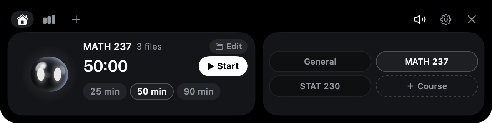
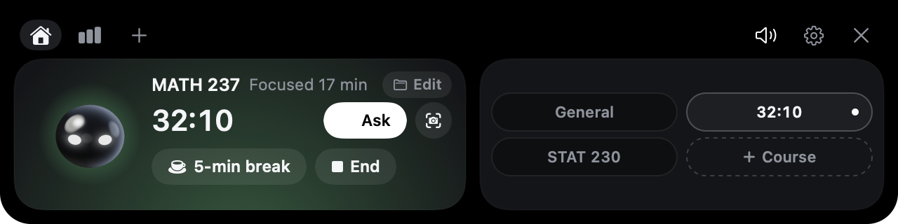
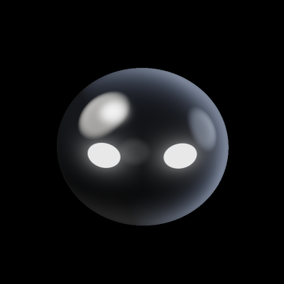
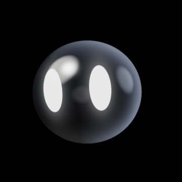
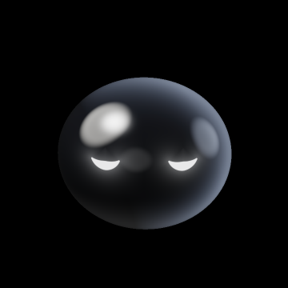
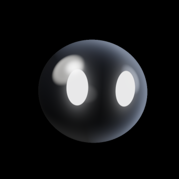
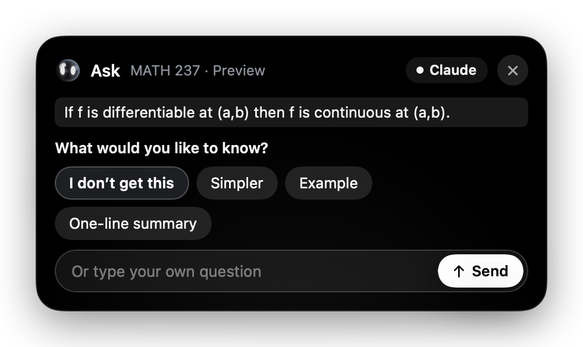
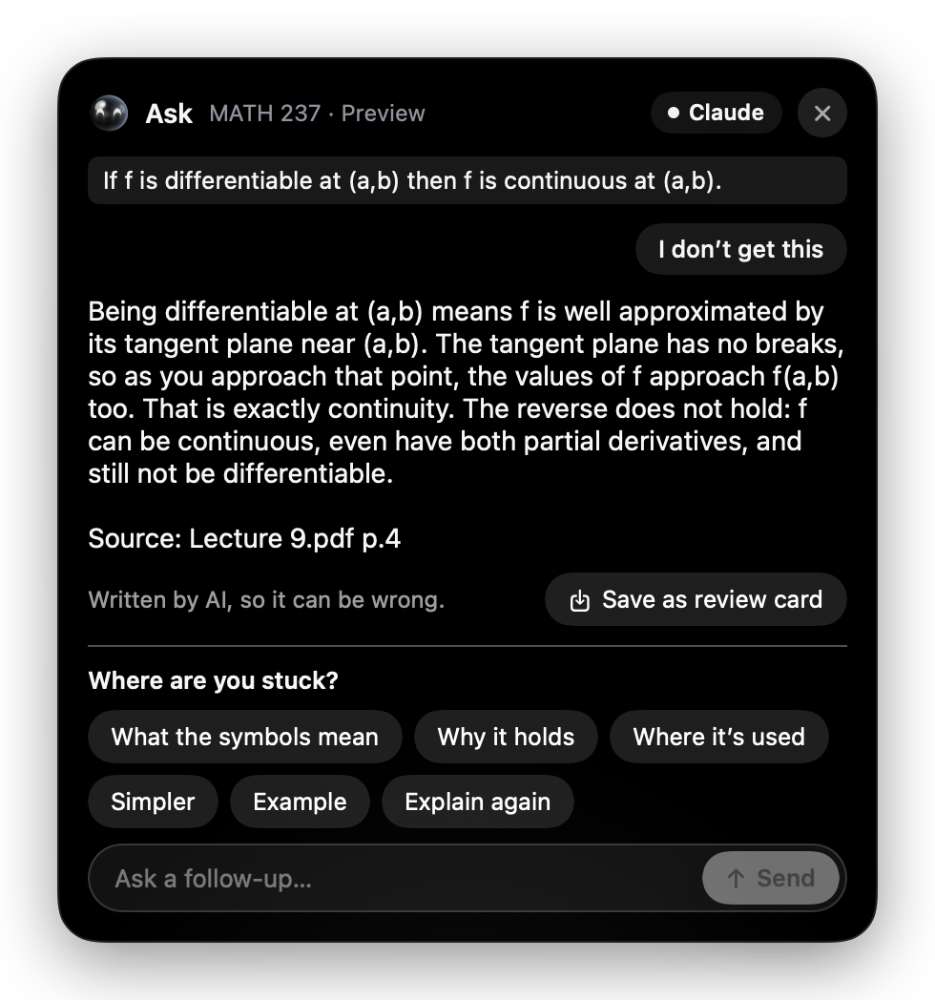

Using it
Everything is a click. There are no shortcuts to remember.
Courses and sessions
Point at the notch and the island slides out a little on both sides, with the mascot in the left ear. Click it and the island opens. The highlighter icon in the menu bar has the same list of courses. Click anywhere else, or keep the pointer away for 15 seconds, and it goes back into the notch. For the last 10 seconds before it closes, a short line under the island shrinks.

- The tabs at the top left are Home, Record and Add. On the right are sounds, connections and permissions, and close.
- Click a course pill on the right and the card on the left switches to that course. Each course gets its own highlighter colour. Press “Start” on the card to start a session. “General” runs the timer only, with no material.
- Pick the session length under the card: 25, 50 or 90 minutes. Your choice is kept for next time.
- “+ Course” opens the Add tab. Type a name, link a folder or add PDFs (or drop them on the island), then press “Add”; what you picked is kept only if you do. “Edit” on a course’s card opens the same tab for that course: its folders, its PDFs, its name, and removing it. Dragging a file onto the folded notch also opens the Add tab. See Adding a course and its material.
- The arrow at the card’s top right opens that course’s folder in Finder.
During a session, the notch keeps the mascot in its left ear and a progress ring with the minutes left in its right. Point at it and a one-line summary appears under the island: the course, your focus time and how many questions you asked. Click it and this opens:

- 5-min break stops counting distractions and showing cards while you rest, and pushes the session back by the time you took. During a break, “Resume” brings you straight back.
- Press End, or let the time run out, and you get a summary and the session is saved.
- During a session, click another course’s pill to get “Switch to this course”. It saves the current session and starts a new one for that course.
- The Record tab shows today’s study time and a bar for each of the last 7 days. Point at a bar to see that day’s time.
The mascot
The island is home to StudyNotch’s mascot, a small round body of glossy black with two white eyes that change shape with what is going on and follow your pointer. When the island folds, it springs into the left ear; when the island opens, it springs to the left of the card, with a faint light behind it in the colour of the current state. It smiles when you point at it, and when you click it, it hops and says a few words. It is drawn in 3D the same way in the app and on this website.




Displays without a notch
On a screen without a notch, a small 80×24 black bar sits in the middle of the menu bar in place of the notch, with the mascot in its centre. It never draws a big black shape pretending to be a notch. Choose which screen the island lives on from “Notch island position” in the menu bar icon. The default is the screen with a notch.
Asking a question
Select text and right-click
In any app, select some text and right-click: a black button appears at the top of the menu. It says “Ask” during a session and “Ask StudyNotch” outside one. Click it and the question window opens right there.
Screenshots during a session
Formulas and graphs fall apart when you select them as text. Take a regular Mac screenshot during a session and the question window opens with that picture. Outside a session, nothing happens.
From the notch
“Ask” in the open island opens the question window with whatever text is selected. The camera button next to it (capture and ask) lets you drag out an area with crosshairs.
The question window

- Pick a button: “I don’t get this”, “Simpler”, “Example” or “One-line summary”.
- If you want to add something, type it in the field. You can also skip the buttons and just type a question.
- Press “Send”.
The answer streams into the same window. No Claude window appears.

- Under the answer, pick a button such as “What the symbols mean”, “Why it holds” or “Where it’s used” and send again to follow up.
- Save as review card adds the selected text and the answer to that course’s
cards.md. - Drag the window by any empty spot to move it. Close it with the button at the top right.
Drift cards
Stay more than 60 seconds on a site or app from your distraction list and a card appears.
- Back to work. Closes the card. It won’t ask about the same place again for 3 minutes.
- 5-min break.
- It’s for study. That place won’t count as a distraction for this session. Press it three times in the same course and it is always allowed for that course.
It never shows a card while you are typing; it waits until your hands stop. If you don’t react for 8 seconds, or click elsewhere, it folds, and it won’t show for the same place again for 10 minutes. If you don’t touch your Mac for 3 minutes, it treats you as away and stops counting time.
The settings file
Choose “Open settings file” from the menu to open ~/StudyNotch/config.json. After editing it, choose “Reload settings”.
| Key | Meaning |
|---|---|
presets | The list of courses: each course’s name, and the places allowed only in that course. |
sessionMinutes | Session length. The value you pick in the notch is saved here. |
allowAlways | Places that are always allowed. An entry with a dot is a site; one without is an app name. |
distractions | Places that count as distractions. |
nudgeAfterSeconds | Seconds before a drift card appears. Default 60. |
breakMinutes | Break length. Default 5. |
offerOutsideSession | Whether a screenshot opens the question window outside a session too. Off by default. |
sounds | Whether the island plays quiet macOS system sounds. On by default. |
display | Which screen the island lives on. notch (default) is the screen with a notch, or the one with the menu bar if none has a notch. main is the screen with the menu bar; mouse is the screen with the pointer. |
ai.provider | auto, claude-cli, codex-cli or api-key. |